Chico Total
Não foi possível precisar as datas de Chico Total: o programa apresenta uma estranha discrepância entre o número de edições e o de datas - tanto originais quanto de reprise. Também não foi possível determinar a numeração de todos os programas. Aqui, ela será apresentada de forma estimada, considerando o que se conseguiu apurar a respeito.
| EPISÓDIO | EXIBIÇÃO | REPRISE | |||
|---|---|---|---|---|---|
| 1ª TEMPORADA - ANO 1 - 1996 | |||||
| 001 | 1x01 | 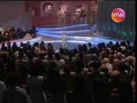 |
participação especial Dennis Carvalho | 06/04/1996 | 22/05/2010 17/04/2011 PULADO |
| 002 | 1x02 | participação especial Tony Ramos | 13/04/1996 | 23/05/2010 24/04/2011 17/10/2013 |
|
| 003 | 1x03 | 20/04/1996 | 30/05/2010 01/05/2011 24/10/2013 |
||
| 004 | 1x04 | 27/04/1996 | 06/06/2010 08/05/2011 31/10/2013 |
||
| 005 | 1x05 | participação especial Gabriel o Pensador | 04/05/1996 | 13/06/2010 15/05/2011 07/11/2013 |
|
| 006 | 1x06 | 11/05/1996 | 20/06/2010 22/05/2011 14/11/2013 |
||
| 007 | 1x07 | 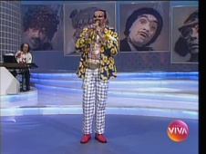 |
participação especial Falcão | 12/05/1996 | 27/06/1996 29/05/2011 21/11/2013 |
| 008 | 1x08 | participação especial Dominguinhos | 18/05/1996 | PULADO 05/06/2011 28/11/2013 |
|
| 009 | 1x09 | 01/06/1996 | 04/07/2010 12/06/2011 05/12/2013 |
||
| 010 | 1x10 | 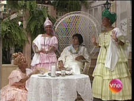 |
Alberto Roberto confessa seus pecados. | 08/06/1996 | 11/07/2010 19/06/2011 12/12/2013 |
| 011 | 1x11 | participação especial Eduardo Galvão e João Bosco | 15/06/1996 | 18/07/2010 26/06/2011 26/12/2013 |
|
| 012 | 1x12 | 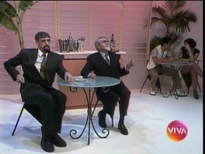 |
22/06/1996 | 25/07/2010 03/07/2011 02/01/2014 |
|
| 013 | 1x13 | 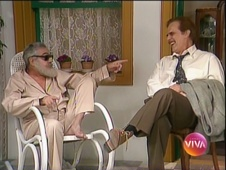 |
participação especial Francisco Cuoco | 29/06/1996 | 01/08/2010 10/07/2011 09/01/2014 |
| 014 | 1x14 | 06/07/1996 | 08/08/2010 17/07/2011 16/01/2014 |
||
| 13/07/1996 sem exibição: Criança Esperança | |||||
| 20/07/1996 sem exibição: Olimpíadas 1996 | |||||
| 015 | 1x15 | 27/07/1996 | 15/08/2010 24/07/2011 23/01/2014 |
||
| 016 | 1x16 | participação especial Lima Duarte | 03/08/1996 | 22/08/2010 31/07/2011 19/12/2013 |
|
| 017 | 1x17 | 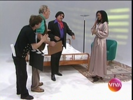 |
Bozó confessa seus pecados. participação especial Isabel Fillardis |
10/08/1996 | 29/08/2010 07/08/2011 30/01/2014 |
| 018 | 1x18 | 17/08/1996 | 05/09/2010 14/08/2011 06/02/2014 |
||
| 019 | 1x19 | 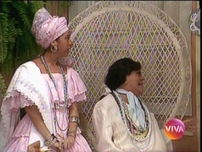 |
24/08/1996 | 12/09/2010 21/08/2011 13/02/2014 |
|
| 020 | 1x20 | 31/08/1996 | 19/09/2010 27/08/2011 PULADO |
||
| 021 | 1x21 | Tan-Tan confessa seus pecados. | 07/09/1996 | 26/09/2010 04/09/2011 20/02/2014 |
|
| 022 | 1x22 | 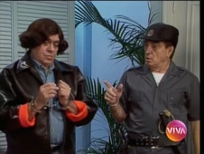 |
participação especial Claudia Mauro | 14/09/1996 | 03/10/2010 11/09/2011 PULADO |
| 023 | 1x23 | 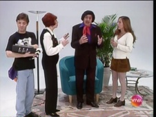 |
participação especial Cissa Guimarães | 21/09/1996 | 10/10/2010 18/09/2011 27/02/2014 |
| 024 | 1x24 | participação especial Eri Johnson | 28/09/1996 | PULADO 25/09/2011 06/03/2014 |
|
| 025 | 1x25 | 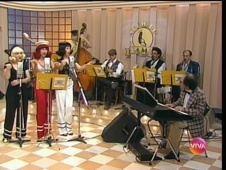 |
participação especial Milton Gonçalves | 05/10/1996 | 17/10/2010 10/2011* 13/03/2014 |
| 026 | 1x26 | 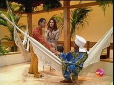 |
participação especial João Carlos Barroso | 12/10/1996 | 24/10/2010 10/2011* 20/03/2014 |
| 027 | 1x27 | 19/10/1996 | 31/10/2010 10/2011* 27/03/2014 |
||
| 028 | 1x28 | participação especial Milton Gonçalves | 26/10/1996 | 07/11/2010 10/2011* 03/04/2014 |
|
| 029 | 1x29 | 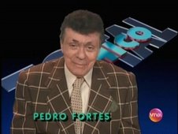 |
participação especial João Carlos Barroso | 02/11/1996 | 14/11/2010 10/2011* 10/04/2014 |
| 030 | 1x30 | 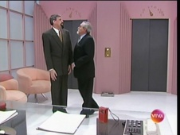 |
participação especial Lucia Alves | 09/11/1996 | 21/11/2010 10/2011* 17/04/2014 |
| 031 | 1x31 | 16/11/1996 | PULADO | ||
| 032 | 1x32 | 23/11/1996 | PULADO | ||
| 033 | 1x33 | 30/11/1996 | PULADO | ||
| 034 | 1x34 | 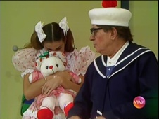 |
07/12/1996 | 28/11/2010 30/10/2011 24/04/2014 |
|
| 035 | 1x35 | 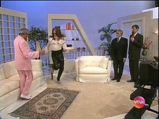 |
Especial de Natal. participação especial Susana Vieira, Arlete Salles, Aracy Balabanian, Marcos Palmeira, Eri Johnson, Floriano Peixoto, Túlio Maravilha e Wando |
14/12/1996 | 26/12/2010 PULADO |
| 21/12/1996 sem exibição: Roberto Carlos Especial | |||||
| 28/12/1996 sem exibição: Angélica Especial | |||||
| 036 | 1x36 | 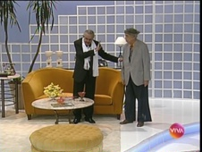 |
Reprise dos melhores momentos de 1996. | 04/01/1997 | 05/12/2010 02/01/2011 06/11/2011 01/05/2014 |
| 037 | 1x37 | Reprise dos melhores momentos de 1996. | 11/01/1997 | 12/12/2010 09/01/2011 13/11/2011 05/2014* |
|
| 038 | 1x38 | Reprise dos melhores momentos de 1996. | 18/01/1997 | 19/12/2010 16/01/2011 20/11/2011 05/06/2014 |
|
| 039 | 1x39 | 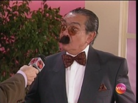 |
Reprise dos melhores momentos de 1996. | 25/01/1997 | 23/01/2011 27/11/2011 12/06/2014 |
| 040 | 1x40 | 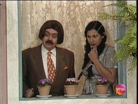 |
Reprise dos melhores momentos de 1996. | 01/02/1997 | 30/01/2011 04/12/2011 19/06/2014 |
| 041 | 1x41 | 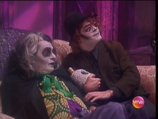 |
Reprise dos melhores momentos de 1996. | 08/02/1997 | 06/02/2011 11/12/2011 26/06/2014 |
| 042 | 1x42 | 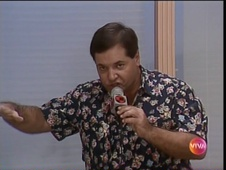 |
Reprise dos melhores momentos de 1996. | 15/02/1997 | 13/02/2011 18/12/2011 03/07/2014 |
| 043 | 1x43 | Reprise dos melhores momentos de 1996. | 22/02/1997 | 20/02/2011 25/12/2011 10/07/2014 |
|
| 044 | 1x44 | 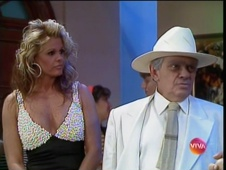 |
Reprise dos melhores momentos de 1996. | 01/03/1997 | 27/02/2011 01/01/2012 17/07/2014 |
| 045 | 1x45 | Reprise dos melhores momentos de 1996. | 08/03/1997 | 06/03/2011 08/01/2012 24/07/2014 |
|
| 046 | 1x46 | Reprise dos melhores momentos de 1996. | 15/03/1997 | 13/03/2011 15/01/2012 31/07/2014 |
|
| 047 | 1x47 | 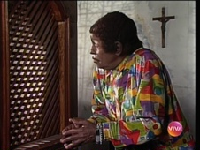 |
Reprise dos melhores momentos de 1996. | 22/03/1997 | 20/03/2011 22/01/2012 07/08/2014 |
| 29/03/1997 sem exibição: Futebol | |||||
| 048 | 1x48 | 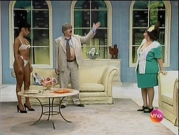 |
Reprise dos melhores momentos de 1996. | 05/04/1997 | 27/03/2011 29/01/2012 14/08/2014 |
| 049 | 1x49 | Reprise dos melhores momentos de 1996. | 12/04/1997 | 03/04/2011 05/02/2012 21/08/2014 |
|
| 19/04/1997 sem exibição: Futebol | |||||
| 050 | 1x50 | Reprise dos melhores momentos de 1996. | 26/04/1997 | 10/04/2011 12/02/2012 28/08/2014 |
|
| 051 | 1x51 | Reprise dos melhores momentos de 1996. Obs.: Edição preparada, originalmente, para ser levada ao ar em 03/05/1997. Porém, a partir dessa data, a linha de sábado passou a privilegiar as transmissões de Futebol. |
NÃO EXIBIDO | PULADO 04/09/2014 |
|